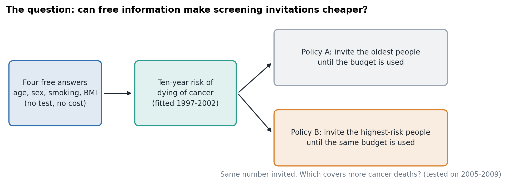
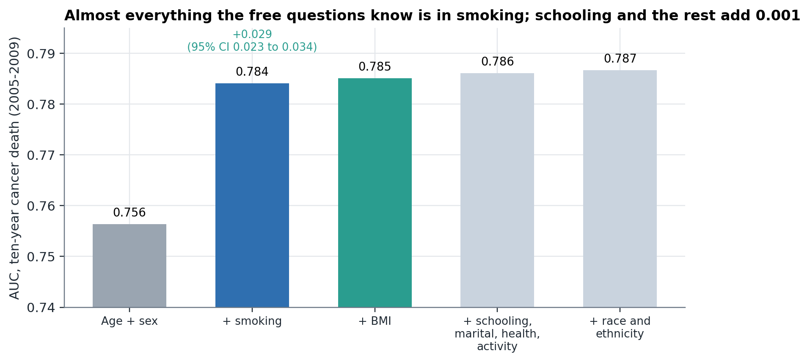
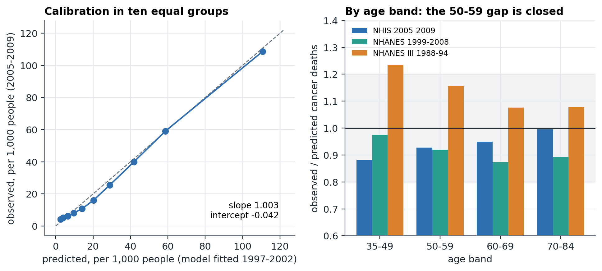
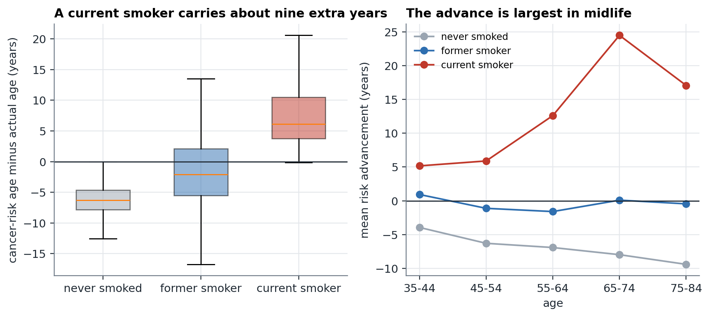
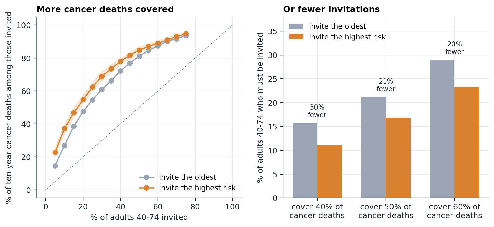
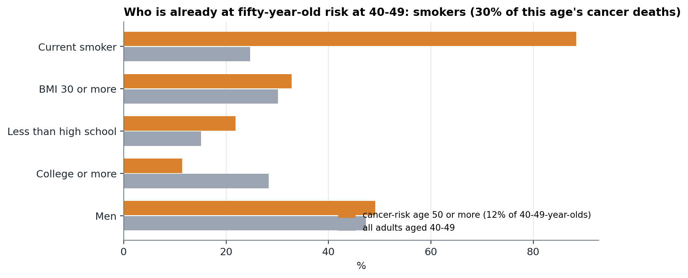
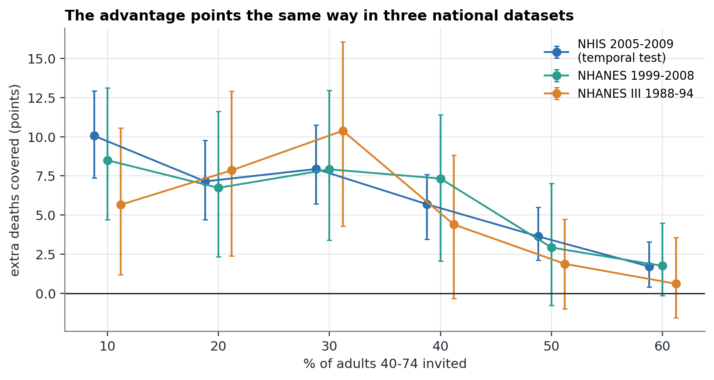
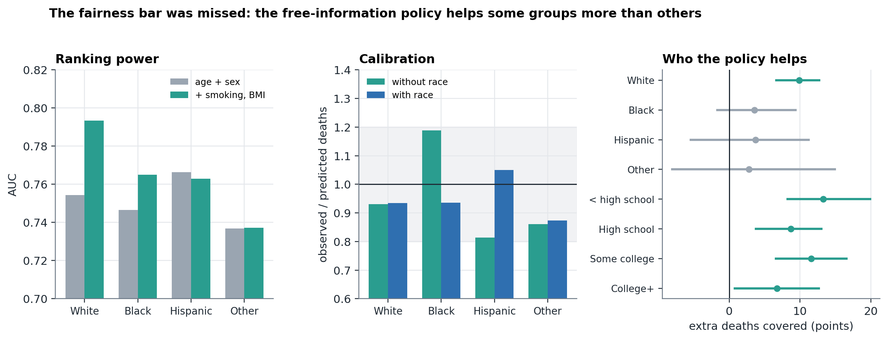

Background. Cancer screening programmes usually invite people by age. Inviting people by risk could reach more of those who will die of cancer for the same number of invitations, which would make screening cheaper or catch more cancer earlier, but risk tools usually need tests, records or genetics. We asked how far four free answers (age, sex, smoking and body mass index) can go.
Methods. We pre-registered the models, the bars and a cost-matched comparison before fitting anything. Using 183,585 adults aged 35 to 84 from the National Health Interview Survey (NHIS, 1997-2009; no earlier cancer) linked to the National Death Index through 2019, we fitted ten-year cancer-death models on 1997-2002 and tested them on 2005-2009, then checked them in NHANES 1999-2008 and NHANES III (1988-1994). The comparison invites the same number of adults aged 40 to 74 by age alone or by predicted risk and counts the cancer deaths among those invited.
Results. The cheapest model that sufficed used age, sex, smoking and BMI (AUC 0.785, against 0.756 for age and sex; gain +0.029, 95% CI +0.023 to +0.034); schooling, marital status, self-rated health and activity added +0.0011. It was calibrated overall (slope 1.003) and in every age band, including 50 to 59, where an earlier, smaller model failed, and it held in both external surveys. A current smoker carried the cancer-death risk of someone 9 years older, on average. At the same number invited, inviting by risk covered 55% of cancer deaths at 20% invited against 48% by age (difference +7.1 points, 95% CI +4.7 to +9.8), or, to cover half of cancer deaths, needed 21% fewer invitations. Among adults aged 40 to 49, 12.3% already had the risk of an average 50-year-old, held 30% of that age group's cancer deaths, and 88% were current smokers. The fairness bar was missed: the model ranked non-Hispanic White adults better (AUC 0.793) than Black (0.765), Hispanic (0.763) and other (0.737) adults, under-predicted cancer deaths in Black adults by 19%, and its coverage gain at 20% invited was clear for White adults (+9.9 points) and for adults without a high-school diploma (+13.2) but not distinguishable from zero for Black, Hispanic or other adults. Adding race fixed calibration without improving ranking.
Conclusions. A few free questions can make screening invitations measurably cheaper in terms of cancer deaths reached, in three national datasets, but the gain comes mostly from smoking and is smaller and uncertain for non-White adults. The outcome is all cancer deaths and not the screenable subset, so the result describes where cancer-death risk sits and not what screening would prevent. A registry cohort with cancer sites and diagnoses is the next test.
Screening for cancer is expensive when it is offered to everyone in an age band, and it is only worth the cost and the harms (false alarms, overdiagnosis) for people whose chance of benefit is high enough. Programmes therefore choose a starting age and a stopping age. Recently, several guidelines moved the starting age for bowel cancer and breast cancer screening earlier, which makes the case for a better way of choosing who to invite stronger, not weaker: starting everyone earlier costs more, and starting only those at higher risk earlier could cost less.
Risk-based invitation is not a new idea. For lung cancer, a risk model built on a few questions (age, smoking, education, body mass index, lung disease and family history) selected people for screening better than fixed pack-year rules.1 Recent work has derived risk-adapted starting ages for lung, bowel and breast cancer screening using smoking history, polygenic scores, biomarkers or risk factors.2,3,4 These are specific to one cancer and often need genetic or laboratory information.
The question here is more basic and aimed at the original idea of a cheap approach: how much of the risk of dying of cancer can be read from information that costs nothing to collect? Earlier work in this project found that routine blood tests add almost nothing to age, sex, smoking and weight for cancer death, which leaves those free answers as the cheapest possible risk tool. It also found that a model built on one national survey was too imprecise: it under-predicted cancer deaths in people aged 50 to 59 and could not be released. This paper uses a survey about ten times larger, with the bars fixed first, to ask four things. How far do free answers go? Is the result calibrated in every age band and in other surveys? What does it do to the number of invitations needed to reach the same share of cancer deaths? And for whom does it work?
The models, the cancer-risk-age definition, five bars and a screening-start question were committed to the repository on 9 October 2026 (docs/CANCER_AGE_PREREG.md) before any model was fitted. The same day, and still before any model was fitted, an addendum added the cost-matched invitation comparison and stated that the aim is earlier, cheaper screening and not communication. The fairness analyses of Section 3.7 beyond bar 4 are exploratory and were added after the results.
The National Health Interview Survey (NHIS) is a household interview survey of the US population. We used the Sample Adult and Person files for 1997-2002 and 2005-2009 (2003 was built from its loose data file; 2004 has no layout file in the standard place and was left out), linked by NCHS through public-use Linked Mortality Files to the National Death Index through 31 December 2019. Layouts were read from NCHS's own SAS programs, and all 183,585 adult records matched to the mortality file. We kept adults aged 35 to 84 without a reported earlier cancer and with known smoking status and BMI. The outcome is death from cancer (underlying cause 2, ICD-10 C00-C97) within ten years of interview. Non-cases are people alive at ten years or dead of another cause; nobody was dropped for how they died.
The predictors are free: age, sex, BMI, smoking (never; former, with years since quitting; current, with cigarettes per day), and for the richer models schooling (four groups), marital status, self-rated health, vigorous activity, and race and ethnicity (non-Hispanic White, non-Hispanic Black, Hispanic, other). Race and ethnicity enter only the fairness comparison; the cheapest model does not use them.
Five nested logistic models (F0 age and sex; F1 plus smoking; F2 plus BMI; F3 plus schooling, marital status, self-rated health and activity; F4 plus race and ethnicity), each fitted separately by sex with a cubic spline in age so the age curve can bend. Models were fitted on interview years 1997-2002 (110,282 adults, 3,379 cancer deaths) and tested on 2005-2009 (73,303 adults, 2,076 cancer deaths). The cheapest model that suffices was fixed as F2 unless F3 gained at least 0.01 AUC with a bootstrap interval above zero.
The model was fitted in NHIS with smoking collapsed to ever or never (the only smoking measure all three surveys share) and applied, with nothing refitted, to NHANES 1999-2008 and to NHANES III (1988-1994), separate surveys with different samples, instruments and years, using the same ten-year cancer-death outcome from their own National Death Index linkage.
For each person the model gives a ten-year risk. The cancer-risk age is the age at which the age-and-sex curve (model F0) reaches that same risk, and the risk advancement period is the cancer-risk age minus the person's own age. A 45-year-old whose free answers put them where an average 58-year-old of their sex stands has an advancement of 13 years. This is a technical way of putting people on one scale; we make no claim here about communication or understanding.
Cost is proxied by the number of people invited. In the temporal test, among adults aged 40 to 74, we compared two policies that invite exactly the same number of people: A, the oldest people, and B, the people with the highest predicted risk. We counted the ten-year cancer deaths among those invited (coverage), with paired bootstrap 95% intervals, at each share invited from 5% to 75%. We also fixed the coverage (40%, 50% and 60% of cancer deaths) and counted how many invitations each policy needs. All outcomes are all cancer deaths, which includes cancers with no screening test.
Five bars (Table 6) and the cost-matched bar were fixed in advance. Calibration used the slope and intercept of the outcome on the logit of the prediction, and observed against predicted deaths by age band (within 20% or inside the Poisson 95% interval). Fairness required a calibration slope between 0.8 and 1.2 in every race and ethnicity group and an AUC spread no larger than 0.03.
Python (scikit-learn, NumPy, pandas). The cohort builder is fetch_nhis_cancer_risk.py, the analysis experiments/cancer_age.py, the exploratory analyses experiments/cancer_age_extra.py; tables and figures are built from their saved output.
| # | Bar | Result | Outcome |
|---|---|---|---|
| 1 | Overall calibration: slope 0.8 to 1.2, intercept within 0.3 (temporal test; and in NHANES) | slope 1.003, intercept -0.042; NHANES 0.977, -0.18; NHANES III 0.933, -0.081 | Met |
| 2 | Calibration in every age band including 50-59 | all four bands inside the rule in all three datasets (ratios 0.87 to 1.24) | Met |
| 3 | F2 beats F0 by 0.02 AUC with an interval above 0 | +0.0286 (+0.0232 to +0.0337) | Met |
| 4 | Fairness: calibration slope 0.8 to 1.2 in each race and ethnicity group, and AUC spread no more than 0.03 | AUC spread 0.056; slopes 0.78 to 1.07 | Missed |
| 5 | Cancer-risk age is calibrated: people 5 or more years above their age | women 377 observed, 390.4 predicted; men 381, 408.4 | Met |
| C | Cost-matched: risk-based covers more cancer deaths at every share invited 10-60%, interval above zero (temporal test) | all shares positive with intervals above zero | Met |
| C-ext | The same in NHANES | positive at every share but intervals include zero at several shares in each survey alone; pooled, intervals above zero at 10-50%; at 60% the lower bound is 0.0 | Not met alone, supported pooled |
Bars were committed to the repository before any model was fitted (docs/CANCER_AGE_PREREG.md, including the addendum that added the cost-matched analysis).

Age and sex alone ranked ten-year cancer death with AUC 0.756 in the temporal test. Adding smoking raised it to 0.784 and BMI to 0.785 (gain over age and sex +0.0286, 95% CI +0.0232 to +0.0337). BMI itself added +0.0010; schooling, marital status, self-rated health and activity together added +0.0011 (interval -0.0002 to +0.0022), and race and ethnicity +0.0005. By the pre-set rule, F2 is the cheapest model that suffices: age, sex, smoking and BMI, four answers anyone can give in a minute (Table 1, Figure 2).

| Model | AUC | Calibration slope | Intercept | Gain over the row above (95% CI) |
|---|---|---|---|---|
| F0 age + sex | 0.7564 | 1.038 | -0.009 | - |
| F1 + smoking | 0.7841 | 0.997 | -0.057 | +0.0276 (smoking alone, derived) |
| F2 + BMI | 0.7851 | 1.003 | -0.042 | +0.0010 (-0.0000 to +0.0020) |
| F3 + schooling, marital, health, activity | 0.7861 | 0.997 | -0.055 | +0.0011 (-0.0002 to +0.0022) |
| F4 + race and ethnicity | 0.7867 | 0.986 | -0.105 | +0.0005 (-0.0007 to +0.0018) |
F2 over F0: +0.0286 (95% CI +0.0232 to +0.0337). The pre-set rule chooses the simpler model unless the richer one gains 0.01 with an interval above zero; F3 does not, so F2 (age, sex, smoking, BMI) is the cheapest model that suffices.
The F2 model was well calibrated overall (slope 1.003, intercept -0.042) and in every age band: in 50 to 59-year-olds it predicted 457.6 cancer deaths and 424 occurred, a ratio of 0.93, where the earlier NHANES-only model had failed. The larger sample and the spline for age closed the gap. In NHANES and NHANES III the calibration slopes were 0.977 and 0.933 (Table 2, Figure 3).

| Age | NHIS 2005-09: observed / predicted | Ratio | NHANES 1999-2008 | Ratio | NHANES III 1988-94 | Ratio |
|---|---|---|---|---|---|---|
| 35-49 | 215 / 244.0 | 0.88 | 48 / 49.2 | 0.97 | 42 / 34.0 | 1.24 |
| 50-59 | 424 / 457.6 | 0.93 | 73 / 79.5 | 0.92 | 59 / 51.0 | 1.16 |
| 60-69 | 599 / 631.3 | 0.95 | 152 / 173.9 | 0.87 | 133 / 123.7 | 1.08 |
| 70-84 | 838 / 842.0 | 0.99 | 228 / 255.4 | 0.89 | 216 / 200.1 | 1.08 |
Every band met the pre-set rule (within 20% or inside the Poisson 95% interval). The 50-59 band is the one that failed in the earlier NHANES-only model.
On average a current smoker carried the cancer-death risk of someone 9.1 years older, a former smoker -0.6 years and a never-smoker -6.1 years, relative to the average of their age and sex. The median advancement was -4.3 years and the 95th percentile +14.5. Current smokers aged 40 to 49 who smoked 20 or more cigarettes a day averaged +7.1 years. Among people with an advancement of 5 years or more, observed cancer deaths matched predicted in both sexes (377 against 390.4 in women; 381 against 408.4 in men), so the measure means what it says (Figure 4).

In the temporal test, at every share invited from 10% to 60% of adults aged 40 to 74, inviting by predicted risk covered more of the ten-year cancer deaths than inviting the oldest, with intervals above zero (Table 3, Figure 5). Inviting 20% of adults covered 54.7% of cancer deaths by risk against 47.5% by age, a difference of +7.1 points (95% CI +4.7 to +9.8); inviting 10% covered 37.0% against 27.0%. Put the other way, covering half of all cancer deaths needed 17% of adults by risk and 21% by age, which is 21% fewer invitations; for 40% of cancer deaths the saving was 30% and for 60% it was 20%. The advantage is largest when few are invited and fades toward zero as most adults are invited, as it must.

| Share of adults invited | Invite the oldest | Invite the highest risk | Difference, points (95% CI) |
|---|---|---|---|
| 10% | 27.0% | 37.0% | +10.1 (+7.4 to +12.9) |
| 20% | 47.5% | 54.7% | +7.1 (+4.7 to +9.8) |
| 30% | 60.9% | 68.8% | +7.9 (+5.7 to +10.7) |
| 40% | 72.2% | 77.9% | +5.7 (+3.5 to +7.6) |
| 50% | 81.1% | 84.7% | +3.6 (+2.1 to +5.5) |
| 60% | 87.3% | 89.0% | +1.7 (+0.4 to +3.3) |
56,276 adults and 1,512 cancer deaths within ten years. Cost is proxied by the number invited. To cover 40%, 50% and 60% of cancer deaths, inviting by risk needs 30%, 21% and 20% fewer invitations than inviting by age.
No adult under 50 is invited under an age policy at a 30% invitation rate (the oldest 30% of adults 40 to 74 are all over 50). Under the risk policy 353 people under 50 were invited and 13 of the 169 cancer deaths in that age group were among them, against none. That is a small absolute number; most cancer deaths in people under 50 are not predicted by smoking and BMI. Among all 21,138 adults aged 40 to 49, 12.3% had a cancer-risk age of 50 or more; they held 30% of that age group's cancer deaths, against 17% if the same number of the oldest 40 to 49-year-olds were chosen. They were overwhelmingly current smokers (88% against 25% of the age group) and were more often without a high-school diploma (22% against 15%) (Figure 8). The descriptive answer to "who is already at fifty-year-old risk in their forties" is: smokers.

Applied unchanged to NHANES 1999-2008 (15,000 adults, 501 cancer deaths) the model's AUC rose from 0.748 to 0.760 (gain +0.012, interval +0.002 to +0.019), and in NHANES III (10,324 adults, 450 cancer deaths) from 0.740 to 0.757 (+0.017, +0.007 to +0.027). Calibration was acceptable in both (Table 4). The cost-matched advantage pointed the same way at every share in both surveys (Figure 6). Each survey alone has too few cancer deaths for the interval to exclude zero at every share, which is why that part of the bar is recorded as not met alone; pooled, the intervals excluded zero at 10% to 50% invited and just reached zero at 60% (the lower bound was 0.0 points at 60%).

| Dataset | Adults 35-84 | Cancer deaths | AUC age + sex | AUC with smoking, BMI | AUC gain (95% CI) | Slope | Intercept | Extra deaths covered at 20% invited, points (95% CI) |
|---|---|---|---|---|---|---|---|---|
| NHANES 1999-2008 | 15,000 | 501 | 0.748 | 0.760 | +0.012 (+0.002 to +0.019) | 0.977 | -0.18 | +6.7 (+2.3 to +11.6) |
| NHANES III 1988-94 | 10,324 | 450 | 0.740 | 0.757 | +0.017 (+0.007 to +0.027) | 0.933 | -0.081 | +7.9 (+2.4 to +12.9) |
| Both pooled | 18,710 | 659 | +7.7 (+3.4 to +11.4) |
Only age, sex, ever-smoked and BMI were available in all three surveys, so the external model uses those four. Coverage is among adults 40 to 74 for the first two rows and pooled for the last.
Calibration and ranking differed by race and ethnicity (Table 5, Figure 7). The model's AUC was 0.793 in non-Hispanic White adults, 0.765 in Black, 0.763 in Hispanic and 0.737 in other adults, a spread of 0.056 against the bar of 0.03, and the calibration slope in the 'other' group (0.779) was below 0.8. It under-predicted cancer deaths in Black adults (observed over predicted 1.19) and over-predicted them in Hispanic adults (0.81). Adding race and ethnicity made both calibrated (0.94 and 1.05) but did not improve ranking, and it shifts who is invited (exploratory; the shares were not saved in the result files), so whether to include race is a policy decision and not a technical one.
The benefit followed the same pattern. At 20% invited the coverage gain was +9.9 points in White adults (interval +6.7 to +12.7) but +3.5, +3.7 and +2.8 in Black, Hispanic and other adults, with intervals that included zero. It was largest in adults without a high-school diploma (+13.2) and smallest in college graduates (+6.7): the policy directs invitations toward people with less schooling, who more often smoke and die younger of cancer. We did not test why the model works less well in non-White adults. A plausible reason is that smoking explains a smaller share of their cancer deaths and the cancers that matter more (for example breast, prostate and bowel) are not predicted by smoking and BMI, but that is a hypothesis.

| Group | Adults | Cancer deaths | AUC age + sex | AUC F2 | Slope F2 | Observed / predicted F2 | Observed / predicted with race | Extra deaths covered at 20% invited, points (95% CI) |
|---|---|---|---|---|---|---|---|---|
| non-Hispanic White | 45,815 | 1384 | 0.754 | 0.793 | 1.069 | 0.93 | 0.93 | +9.9 (+6.7 to +12.7) |
| non-Hispanic Black | 11,431 | 397 | 0.747 | 0.765 | 0.913 | 1.19 | 0.94 | +3.5 (-1.7 to +9.4) |
| Hispanic | 11,379 | 194 | 0.766 | 0.763 | 0.874 | 0.81 | 1.05 | +3.7 (-5.4 to +11.2) |
| other | 4,543 | 97 | 0.737 | 0.737 | 0.779 | 0.86 | 0.87 | +2.8 (-8.1 to +14.9) |
| less than high school | 13,290 | 566 | 0.724 | 0.759 | 0.913 | 1.07 | +13.2 (+8.2 to +19.9) | |
| high school or GED | 20,978 | 670 | 0.739 | 0.763 | 0.936 | 0.96 | +8.7 (+3.8 to +13.0) | |
| some college | 19,526 | 488 | 0.752 | 0.789 | 1.051 | 0.95 | +11.6 (+6.6 to +16.5) | |
| college or more | 19,069 | 340 | 0.787 | 0.803 | 1.057 | 0.81 | +6.7 (+0.8 to +12.7) | |
| women | 39,843 | 1024 | 0.739 | 0.770 | 0.981 | 1.02 | +6.3 (+2.7 to +9.7) | |
| men | 33,460 | 1052 | 0.772 | 0.799 | 1.051 | 0.90 | +7.2 (+4.4 to +10.5) |
Coverage is among adults 40 to 74. 'Observed / predicted with race' is the model that also includes race and ethnicity, shown to see whether it fixes calibration.
The result did not depend on early deaths or the horizon. With the first 24 months of follow-up removed (to guard against undiagnosed cancer), the AUC gain held (0.755 to 0.783) and the coverage gain at 20% invited was +7.0 points (+4.0 to +9.3). With a five-year horizon it was +9.9 points (+6.2 to +13.9), AUC 0.775 to 0.805.
The main analysis counts respondents. Weighting each respondent by the NHIS sample-adult weight so the sample stands for the US civilian adult population (97.2 million adults aged 40 to 74 in 2005-2009), the advantage was the same size or larger: inviting 20% of adults covered 57% of ten-year cancer deaths by risk against 48% by age (+9.2 points, interval +5.7 to +12.0), and the interval excluded zero from 10% to 50% invited but not at 60% (+1.4, -0.4 to +3.4). To cover half of ten-year cancer deaths, inviting by risk instead of age would need about 3.9 million fewer invitations (19%); for 40% of deaths, 4.9 million (31%). These are one-off counts for a population of that size, not annual savings or money, and the bootstrap ignores the survey's clustering, so the intervals are somewhat too narrow.
Four free answers (age, sex, smoking and BMI) are enough to rank ten-year cancer death well, are calibrated across age bands, and replicate in two other national surveys. Using them to decide whom to invite, in place of age alone, covers more cancer deaths for the same number of invitations, or the same share of cancer deaths with roughly a fifth to a third fewer invitations. In the sense of the original idea, this is cancer risk assessment that costs nothing to collect and could make screening earlier for people at high risk and cheaper overall.
The gain is mostly smoking. Smoking drove almost all the improvement over age and sex, the people moved up in the ranking in their forties were overwhelmingly current smokers, and the people who gained most were those with less schooling. This is not a surprise, and it is a limit: for the many cancers that smoking does not cause, free answers say little.
The fairness bar was missed and the paper reports it as a main result. The same policy that reduces invitations overall helps non-Hispanic White adults and adults with less schooling clearly, and helps Black, Hispanic and other adults by amounts we cannot distinguish from zero. A tool built on this model would under-predict risk for Black adults and over-predict it for Hispanic adults unless race were included, and including race changes who is invited. Neither option is obviously right, and the choice belongs to the people who run a programme and the communities it serves. A better answer is probably more information that matters in those groups (family history, screening history, and cancer-specific risk factors) and not a different way of using the same four answers.
Risk-based selection for lung cancer screening is established,1 and risk-adapted starting ages have been derived for lung, bowel and breast cancer using smoking history, polygenic scores or biomarkers.2,3,4 A recorded search of Europe PMC on 9 October 2026 (six queries, 806 retained records; data/audit/novelty_cancer_age.csv) found no study that frames all-cancer-death risk from free information as a risk-equivalent age, compares cost-matched invitation by age and by risk, and checks it in three national surveys with an equity analysis. The closest work is site-specific. This is not proof that none exists. The contribution is the general, free-information framing, the cost-matched comparison, the external replication and the honest equity result, not the invention of risk-based screening.
docs/CLINICAL_DATA_ACCESS.md), cancer by cancer, so that coverage is of screenable cancers.This study was carried out with an AI assistant (Anthropic Claude, via Claude Code), which wrote the cohort builder and analysis code, ran the analyses, drafted the text and searched for background literature. An AI cannot be an author. The human author set the question, is responsible for the work, and must verify the statistics and every statement before submission. No second person has re-run the analysis.
The study uses public, de-identified survey data and NCHS public-use linked mortality files; no participants were contacted. Code, pre-registration and results are in the public repository (github.com/palashraks-afk/OncoVision). Clinical mentorship and authorship are not asserted here.
None declared. No funding.
References 1, 5 and 6 were looked up by title in Crossref and match; references 2 to 4 were identified from Europe PMC records and their journals should be completed from the originals. References 7 and 8 are guidelines and data products.